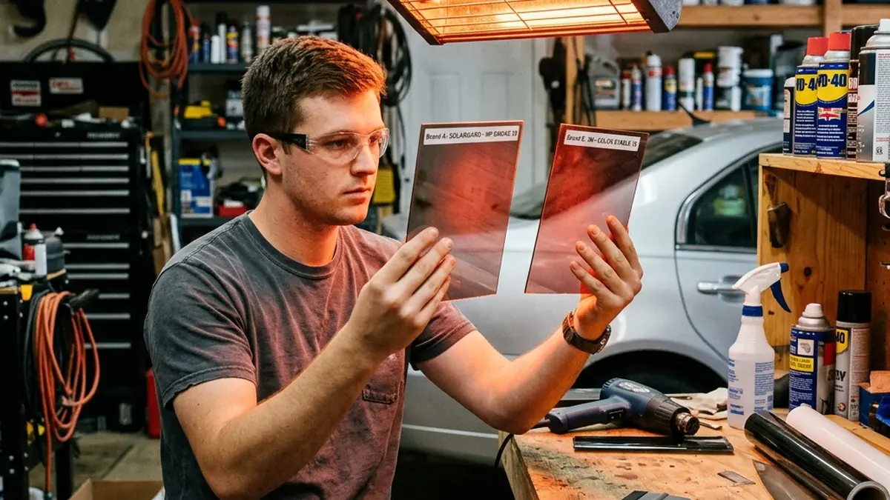

If you have spent more than ten minutes researching automotive window film, you have undoubtedly stumbled across the name LLumar. It dominates forums, reddit threads, and recommendations from professional installers. But a very common question we hear in the shop is simply: is llumar the best tint available today?
The short answer is yes, but to understand why, we need to compare it against the broader market. The window film industry is crowded with hundreds of manufacturers, ranging from cheap, white-label imports to massive, multinational corporations.
Unmatched Optical Clarity
One of the most significant factors separating LLumar from its competitors is optical clarity. When you install a dark tint, especially a ceramic one, cheaper brands often exhibit a hazy, milky, or "low-angle haze" effect when direct sunlight hits them. This can be incredibly distracting and dangerous while driving.
LLumar's manufacturing process is notoriously strict. Their films are aggressively clear. Looking from the inside out, it often feels as though the window isn't tinted at all, completely preserving your night vision while still providing extreme privacy from the outside.

Infrared Heat Rejection
While many brands boast about their UV protection (which almost all modern films do well), the real test is infrared (IR) heat rejection. This is the heat you actually feel burning your skin through the glass. LLumar's FormulaOne Stratos and CTX lines are engineered with proprietary nano-ceramic technology that traps and disperses this heat.
So, when someone asks, is llumar the best tint on the market? When you combine their unmatched optical clarity, aggressive IR rejection, and color stability, it is incredibly difficult to argue otherwise. It is the gold standard for a reason.